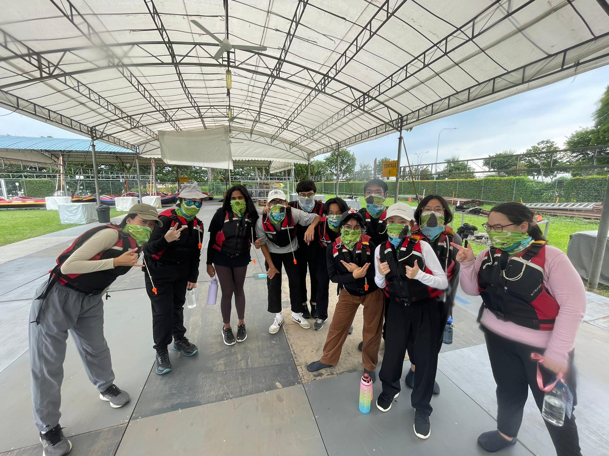
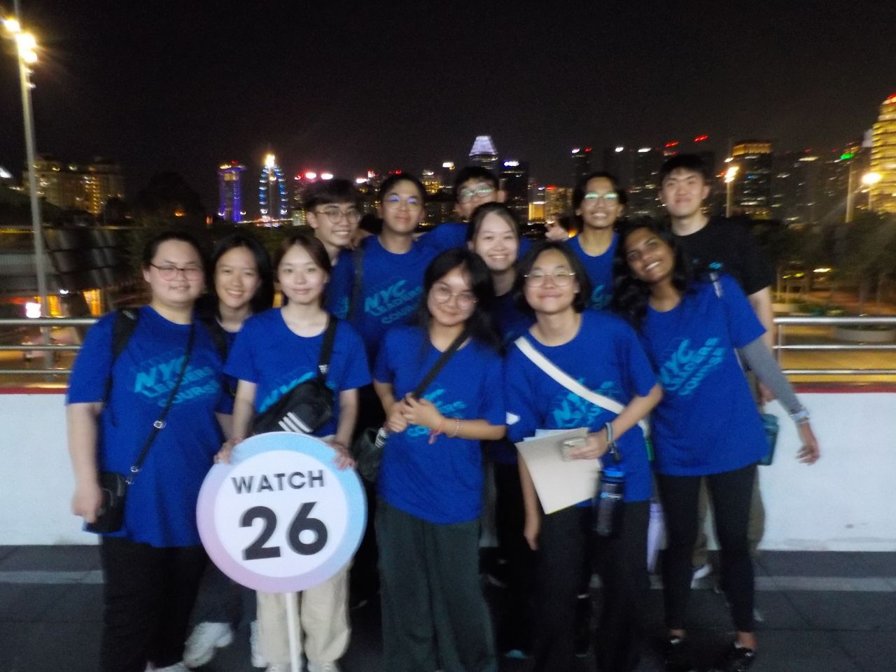
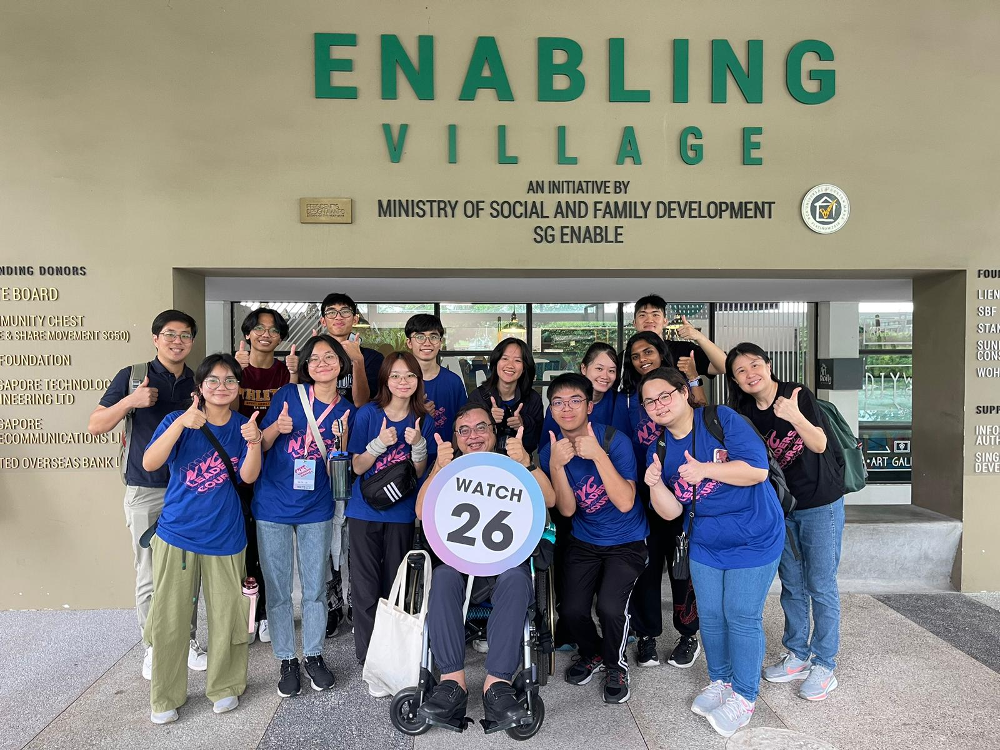

NYC Leaders Course 2024
TLDR; From 8-10 June, I participated in the 3-day-2-night NYC Leaders Course. Activities included OBS at Punggol Jetty, visits to Rolls Royce and the Enabling Village, and a Total Defence amazing race.

Day 1: OBS & Resilience
On the first day, we gathered at Punggol Jetty Point for our OBS. My watch did the row boat activity. We faced challenges such as conflicting ideas and overpowering voices, but we eventually overcame them as we started to contribute our ideas and learnt to compromise. I definitely stepped out of my comfort zone by participating in this activity as I am not a physically active person. It helped me build resilience as it was both physically and mentally challenging to row for nearly 6 hours.
Day 2: Singapore's Past & Amazing Race
For day 2, we headed over to SMU for an experience through Singapore's past. We had to take on personas of fictional characters—I took on "Raj," a man helping farmers and hawkers. It was difficult as my personality did not align with Raj's at all, but my friends helped me understand him better.
In the evening, we returned to the National Stadium for a mini Total Defence amazing race, going around different stations to take part in challenges relating to each pillar of defence.

Day 3: Learning Journeys
On the final day, we visited Rolls Royce to learn about engine production, followed by a reflection session. In the afternoon, we went to the Enabling Village, a place for inclusivity. We were welcomed by Mr. Warren Sheldon, who introduced us to technologies that promote inclusivity, such as specialized mice and alert canes.
This learning journey made the greatest impact on me as it was an eye-opening experience getting to know the way of life of those with special needs.
